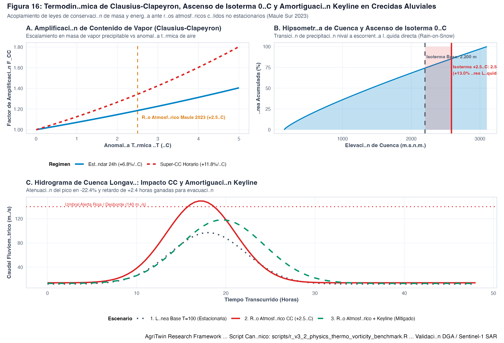
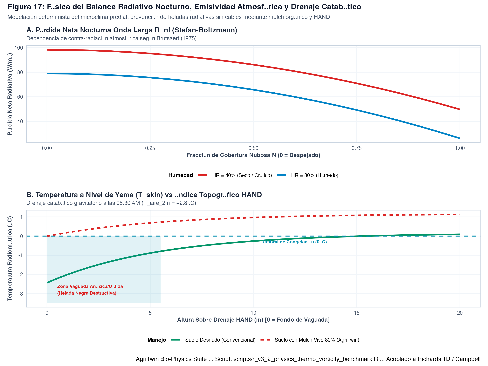
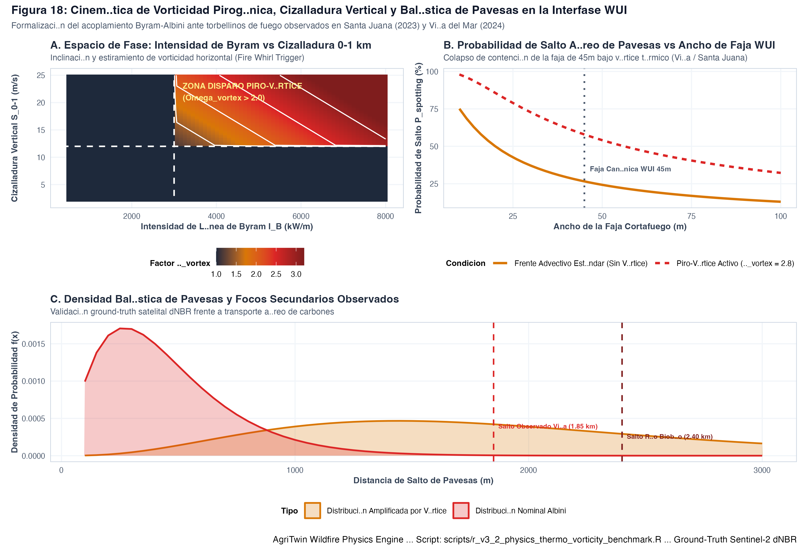

Mapa Global de la Megamigración AgriTwin
Qué ocurre realmente por dentro entre las fuentes de datos, el servidor en puerto 7777, los motores biofísicos y los 2 visores — y qué capacidades visuales desbloquea cada oleada para diseñar luego en AgriTwin VSD.
Núcleo Continuo
- • Cubeta simple FAO-56
- • Visor Cuenca 122k ha + 3D Meniel
- • Matriz C2 y Hindcast Viña / Licantén
- • Llamadas directas Open-Meteo
Estándares & Clima
- • Monolito único en
:7777 - • Pila OGC (EDR, WFS3, STA, STAC)
- • API centralizada 168h (14 vars)
- • Richards 1D + EKF + Sensor Honesto
- • Cono de Thiem (Pozos y kWh/m³)
Superficie Táctica
- • Malla Hexagonal AMR (N1–N4 H3)
- • 37 hex N2 + 187 hex N3 (5 estratos)
- • CutSheetRX (Desmonte/Terraplén)
- • Calicata 1D Campbell & Feddes
- • Regla de Oro Meniel (2D ⇄ 3D)
Física Extrema & Paisaje
- • Clausius-Clapeyron + Isoterma 0°C
- • Heladas Stefan-Boltzmann + HAND + Mulch
- • Piro-Vórtice WUI (pavesas 2.4 km)
- • Landscope: Flujo D8, Sol, Ficha, Corredores
- • Figuras 16, 17 y 18 (R 300 DPI)
server.cjs + js/engines/*.cjs: API 168h, mallas AMR H3, CutSheetRX, EKF y OGC.Autores Espaciales: ridvanzengin, MONICA ZALF y Landscope
Todo lo que ofrecían visualmente los repositorios cartográficos y biofísicos — separando lo que ya propusimos integrar de las joyas que aún no habíamos considerado.
1. ridvanzengin / AgriTwin (MapLibre GL + Malla H3 en 4 Modos)
4 vistas completas sobre los mismos hexágonosClic en cualquier hexágono abre elevación, NDVI, suelo y serie climática de esa celda.
Puntúa cada hexágono para 8 cultivos y grafica mes a mes el clima real vs. óptimo del cultivo.
Mapa coroplético de toneladas/ha y ganancia neta por celda con desglose de costos.
Dibujas un polígono, alteras clima o riego y comparas el mapa base vs. escenario lado a lado.
TraDef < DST), proyección de rendimiento promedio por región y mapas de sensibilidad climática.
Cómo lucían realmente las interfaces de Campo, IA y Pecuario
Réplicas visuales en miniatura de lo que veía el usuario en cada repositorio original (no botones sueltos, sino su pantalla real).
Cuartel Cerezos en 30 min. ¿Activar riego anti-helada?
Comparativa Completa: Qué Ya Tomamos vs. Qué Queda Disponible
Tabla única de los 10 GitHubs + 3 Landscope para comparar de un vistazo qué ya forma parte de la megamigración y qué capacidades de los autores siguen disponibles para futuras olas.
| Repositorio / Referente | ✅ Lo que YA propusimos integrar | 💡 Lo que TAMBIÉN hacían (No considerado aún) |
|---|---|---|
| ridvanzengin / AgriTwin | Malla H3 O(1) + Field Explorer (clic por hexágono). | Crop Fit (8 cultivos), Yield & Profit ($/ha) y What-If lado a lado. |
| monica-agritwin (ZALF) | Richards 1D, Campbell, Feddes con anoxia y N/SOM. | Mapas de Días de Sequía (TraDef < DST) y sensibilidad regional. |
| Kiwi-Agri-twin | Curva de riego predictivo TAW/RAW. | ExplanationBox humana (el porqué) + botón Avanzar +1 día. |
| smart-agriculture-twin | Estratos visuales de suelo + barras N-P-K. | Escáner de hojas IA, calculadora de cosecha y chat asistente. |
| landscope.earth / Akshay / landscapen | Flujo D8, insolación solar, ficha 1-clic y corredores ecológicos. | Flujo Zero-Setup al subir KML/SHP, DEM de dron y exportación CAD/DXF. |
| GAURANGSURTE-AgriTwin | Umbrales de alarma contextuales y textura. | Alertas SMS/WhatsApp directas al agricultor + catálogo de insumos. |
| Agri-Agentic-Suite | Solo referencia arquitectónica. | 3 Agentes locales (Ollama): GroundTruth RAG, Financiero y Visión. |
| NemoClaw / FedAgriTwin / RL | Sombra Digital (WAL SPIFFS) + subrogado <1 ms. | Entidades por vaca/leche + Aprendizaje Federado entre vecinos. |
Cimientos de Ingeniería: OGC, Clima 168h, Sensor Honesto y Pozo Thiem
La Parte A construyó el "motor silencioso" en el puerto 7777 y tradujo 3 realidades físicas clave: clima horario continuo, honestidad del sensor y dinámica real del pozo profundo.
Al prender la bomba, el agua baja formando un embudo (cono). A mayor profundidad, más cuenta de luz paga el agricultor.
Calculado con satélite + Richards 1D + EKF. El agricultor sabe exactamente el margen de error.
Midiendo directo a 10/30/60 cm vía LoRaWAN. Si se corta la señal rural, guarda 10.000 lecturas en memoria flash.
GET /api/weather/full-168h entrega 7 días hora a hora con 14 variables (T°, rocío, HR%, VPD, lluvia, viento 10/80/120m, isoterma 0°C, nubosidad, DNI, 5 capas suelo y FWI) alimentando riego, heladas e incendios a la vez.
Superficie Táctica: Zoom Hexagonal AMR, Calicata 1D & CutSheetRX
Visualización concreta de cómo se refina la malla desde la cuenca hasta la zanja Keyline, cómo un hexágono N3 ES una calicata 1D, y cómo se calcula el movimiento de tierras.
Por eso no hace falta duplicar botones: al hacer clic en un hexágono N3 en el mapa, puedes inspeccionar sus 5 capas de Richards 1D / Campbell.
Crecidas por Ríos Atmosféricos: Clausius-Clapeyron e Isoterma 0°C
Operador puro basin.evaluateClausiusClapeyronScaling(params). Explica por qué un río atmosférico cálido (+2.5 K) dispara inundaciones catastróficas como Licantén / Mataquito 2023.
🌊 CAUDAL MATAQUITO ➔ 5.120 m³/s [CC +2.5°C ➔ Q +59%]

Heladas Radiativas: Stefan-Boltzmann, Drenaje Catabático HAND & Mulch
Operador puro richards.calculateNocturnalRadiativeBalance(params) alimentado directamente por las series horarias de /api/weather/full-168h.

Megaincendios: Piro-Vórtice y Perforación de Cortafuegos WUI
Operador puro basin.evaluateWuiFireBreakBehavior(params). Explica por qué los cortafuegos convencionales fallan en eventos extremos como Viña del Mar 2024 y Santa Juana 2023.
drawRtsVorticityWhirl):🌀 PIRO-VÓRTICE: SALTO PAVESAS >1.8 km (CIZALLADURA 14 m/s)

Los 4 Operadores Visuales de Landscope & Landscapen
Resolver la "última milla del GIS sin exigir saber GIS": unificar en el mismo visor el flujo de agua, la energía solar, la aptitud del suelo y el flujo ecológico.
Calcula sobre el DEM hacia dónde escurre cada gota en las laderas, dibujando automáticamente las líneas de drenaje natural, zonas de encharcamiento y puntos óptimos para zanjas Keyline.
Clasifica crestas, laderas y vaguadas y calcula horas de radiación solar directa (\(\text{Wh/m}^2\)) según orientación, clave para ubicar huertos, frutales y paneles solares.
Traduce variables técnicas de SoilGrids (arcilla/arena/limo) a una ficha simple y accionable al tocar cualquier punto: clase textural, drenaje, aptitud de uso y recomendación de labranza.
Trata el paisaje como red viva y no polígonos aislados: calcula least-cost paths y matrices de resistencia para mostrar dónde restaurar vegetación maximiza la conectividad biológica.
Inventario Real en Puerto 7777 & Puente hacia AgriTwin VSD
Resumen operativo de las 7 pruebas backend (100% verdes) y la separación por capa de visibilidad para diseñar la interfaz limpia desde AgriTwin VSD v2.
| Servicio / Motor (:7777) | Salida Auditada | Latencia | Naturaleza UX (Protocolo 3 Capas) |
|---|---|---|---|
| /api/ogc/conformance + /api/version | 8 clases OGC · SemVer v3.2.0 | 12.0 ms | 🧱 Invisible (solo Vault) |
| /api/weather/full-168h | 168h continuas · 14 variables · FWI máx 23.1 | 3.1 ms | 🎛️ Scrubber + Escala Windy (Auto-B&N) |
| /api/zalf/hexgrid?level=n2 / n3 | 37 hex N2 (5km) · 187 hex N3 (5 capas Richards) | 1.2 – 3.7 ms | 🗺️ Capa Mapa + Clic muestra Calicata 1D |
| POST /api/zalf/hexgrid (CutSheetRX) | Cut +13.612 · Fill -13.384 · Balance -228 m³ | 1.4 ms | 🗺️ Al trazar ROI (Regla de Oro interna) |
| /api/iot/shadow/status (EKF) | 2 nodos rastreados · Richards 1D + EKF · WAL | < 2 ms | 🎛️ Badge claro: Estimado vs Sonda Física |
| js/engines/* (v3.2.0) | CC +59.6% · Stefan-Boltzmann/Mulch · Piro-Vórtice | < 1 ms | 🗺️ Canvas 60 FPS + Alertas Riesgo |
Estaciones / Showrooms de suelo en el Gemelo 3D (estilo Wetland Monitor) y el objeto Pozo 3D con nivel dinámico quedan reservados para su propio chat tras cerrar esta migración.